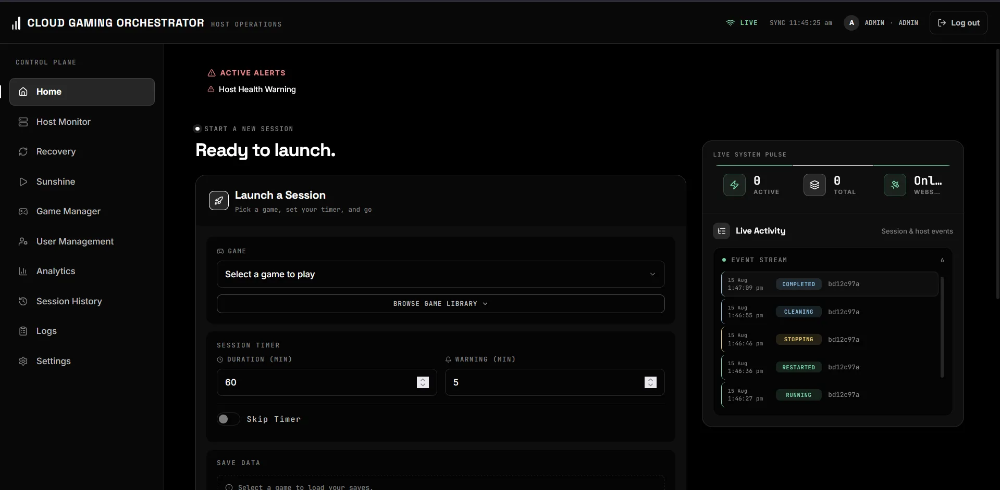

01 / Featured
Personal Cloud Gaming
Personal Cloud Gaming
Orchestrator
A self-hosted cloud gaming stack: a Python agent on the host talks to a FastAPI control plane, React on the front, JWT-secured WebSockets for live telemetry, and Sunshine + Tailscale for low-latency streaming.
React
FastAPI
Python
WebSockets
JWT
Sunshine
Tailscale
Featured
